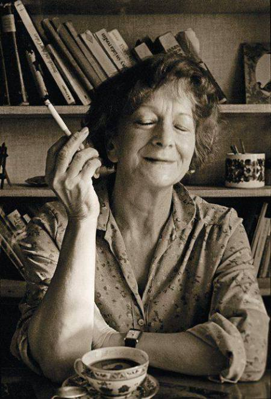

Wisława Szymborska
Nic dwa razy
Nic dwa razy się nie zdarza
i nie zdarzy. Z tej przyczyny
zrodziliśmy się bez wprawy
i pomrzemy bez rutyny.
Choćbyśmy uczniami byli
najtępszymi w szkole świata,
nie będziemy repetować
żadnej zimy ani lata.
Żaden dzień się nie powtórzy,
nie ma dwóch podobnych nocy,
dwóch tych samych pocałunków,
dwóch jednakich spojrzeń w oczy.
Wczoraj, kiedy twoje imię
ktoś wymówił przy mnie głośno,
tak mi było jakby róża
przez otwarte wpadła okno.
Dziś, kiedy jesteśmy razem,
odwróciłam twarz ku ścianie.
Róża? Jak wygląda róża?
Czy to kwiat? A może kamień?
Czemu ty się, zła godzino,
z niepotrzebnym mieszasz lękiem?
Jesteś - a więc musisz minąć.
Miniesz - a więc to jest piękne.
Uśmiechnięci, współobjęci
spróbujemy szukać zgody,
choć różnimy się od siebie
jak dwie krople czystej wody.